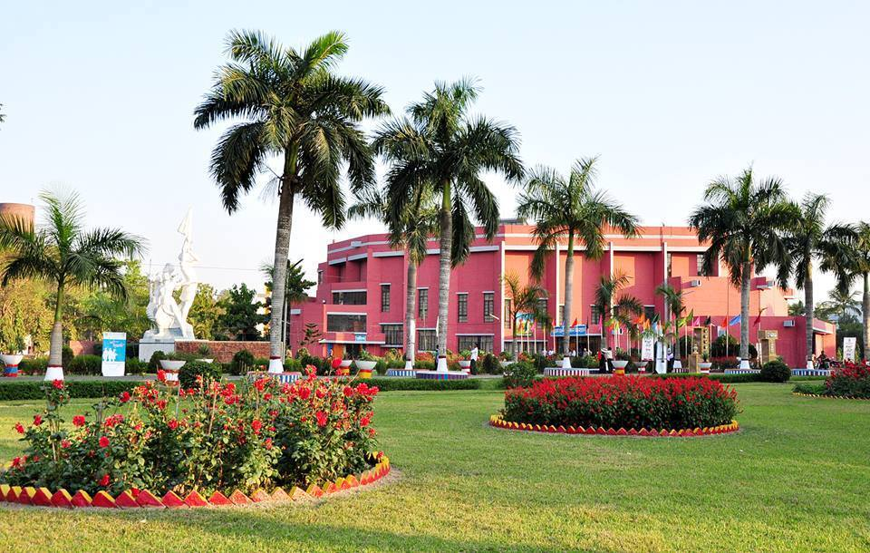

About of Bangladesh Agricultural University (BAU)
Established: 18 August 1961
Site & Location: The University campus is situated on the western side of the old Brahmaputra river covering an area of 1200 acres, 3 kilometers away south of Mymensingh town.
No. of Faculties: 6, No. of Departments: 44
Faculty of Veterinary Science: Departments - 8
Faculty of Agriculture: Departments - 16
Faculty of Animal Husbandry: Departments - 5
Faculty of Agricultural Economics & Rural Sociology: Departments - 5
Faculty of Agricultural Engineering & Technology: Departments -5
Faculty of Fisheries: Departments –5
Institutes: Graduate Training Institute (GTI), Institute of Agribusiness and Developmental Studies (IADS); Interdisciplinary Institute for Food Security (IIFS); Char and Haor Development institute
No. of Teachers: 567 ( 363 with PhDs and 34 on leave for postdoc or visiting professors/researchers in foreign universities)
No. of Officers: 380
No. of Halls Residence: 12 (Male-9, Female-3)
Major Farms: 10
Central Library- No. of total collections: Books- 1,92,978 volume, (38,633 volume with banded publications), Total Titles 2,123, Current Journals -116, Online Journal: INASP-PERG, AGORA, HINARI OARE, including all journal of BANGLAJOL
No of Passed-out Graduates : 42,137, Bachelor's Degree-25,523, M.S.-16,078, Ph.D.- 537
Current student's enrolment: 8088 (Male 4491 and Female 3597)
Undergraduate students 5147 (with 56 international students)
Undergraduate students in the first year: 1200
Undergraduate inbound exchange students: 60
Undergraduate outbound exchange students: 27
Postgraduate students 2941 (with 5 international students)
Postgraduate inbound exchange students: 26
Postgraduate outbound exchange students: 21
Research:262 on-going Research Projects under Bangladesh Agricultural University Research System (BAURES).
Extension: There are 40 Associations of Mymensinghsadar with 3 Associations of Trishal and Gouripurupazila where agricultural extension and village development activities are being carried out by the (BAUEC) Besides, Vegetables Cultivation Schemes are going on 10 Primary schools, High schools, Madrashas& Orphanages under Mymensinghsadar, Trishal, Gouripur, and PhulpurThanas. 48 ideal houses have been selected to introduce Farm Management in Agricultural Development. As many as 10,185 farmers have so far attended 36 training programs arranged by BAUEC.
Training: Graduate Training Institute (GTI) offered pre-service and in-service training courses including international training programs & workshops. A total of 23,855 people were trained including foundation training of University teachers & Officer.
Extra-Curricular Activities:
Co-Curricular and socio-cultural programs are being conducted at Teacher-Student Centre &ShilpacharyaZainul Abedin Auditorium under the guidance of the Students Affairs Division.
Different games and sports are being conducted by the Department of Physical Education.
Activities of Central Students' Union (BAUCSU) are taken care of by this division and
This division also supervises various co-curricular & extra-curricular activities of different Hall Students' Unions, Rover Scouts, and BNCC.